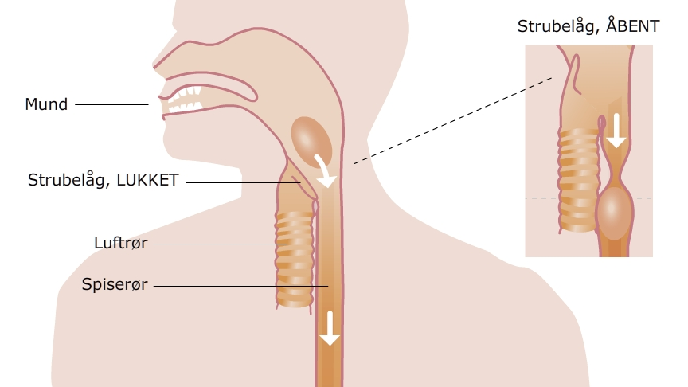

I halsen har vi to rør. Spiserøret der fører ned til maven og luftrøret der fører ned til lungerne. Vi har to forskellige ting der skal igennem halsen. Det er mad og vand på den ene side og luft på den anden. Det er vigtigt at vi ikke sender maden ned i luftrøret, da vi så kommer til at hoste meget kraftigt. Dette kaldes at få maden i ”den gale hals” og er meget ubehageligt. For at undgå at få mad ned i luftrøret sidder der en lille klap der dækker for luftrøret når maden skal forbi. Denne lille klap kaldes for strubelåget.
